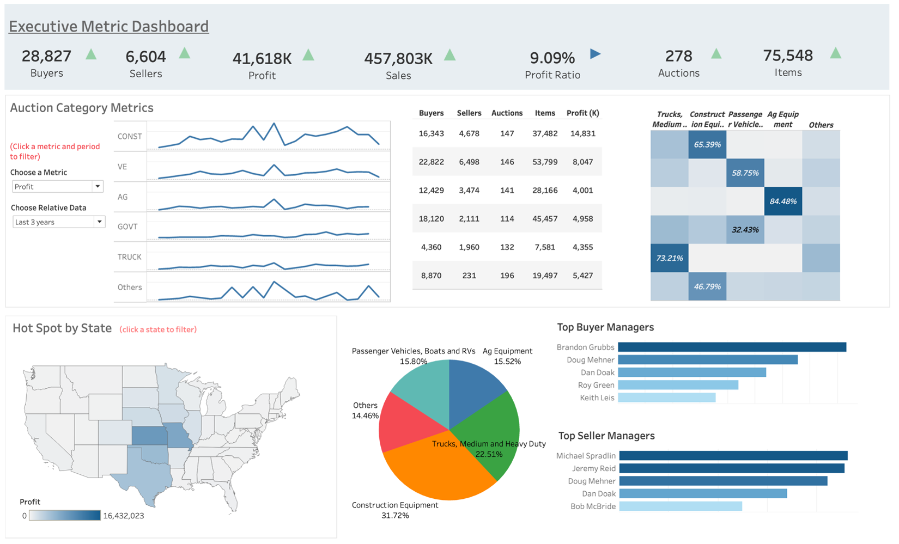
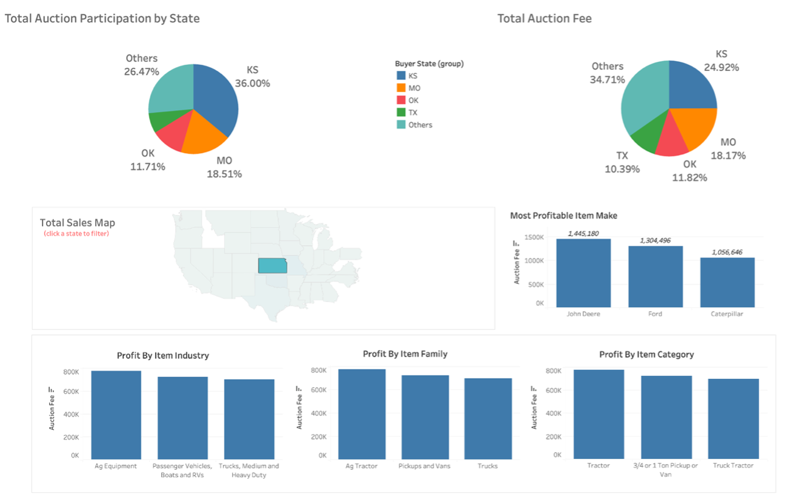
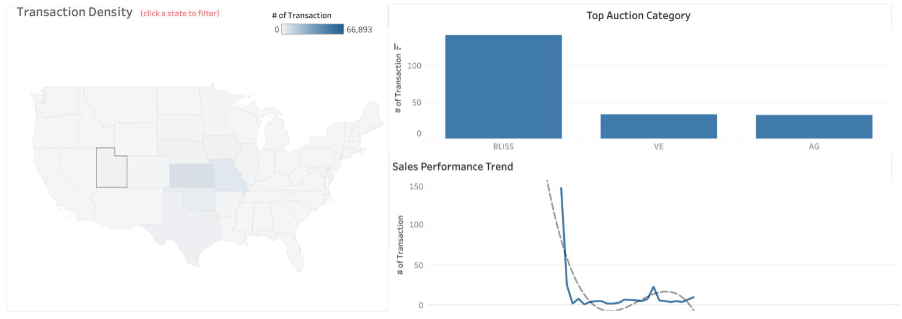
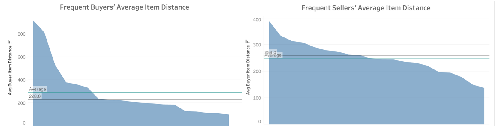
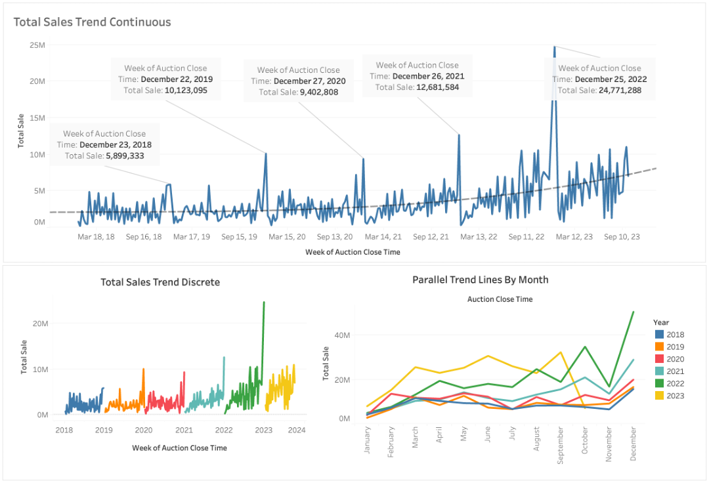
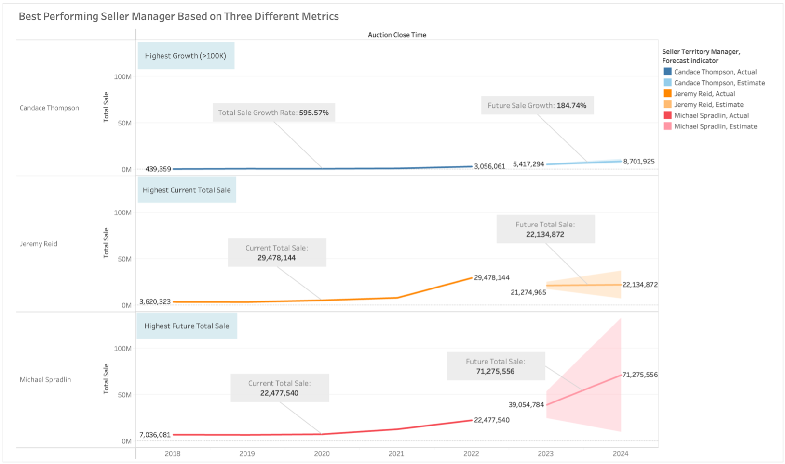
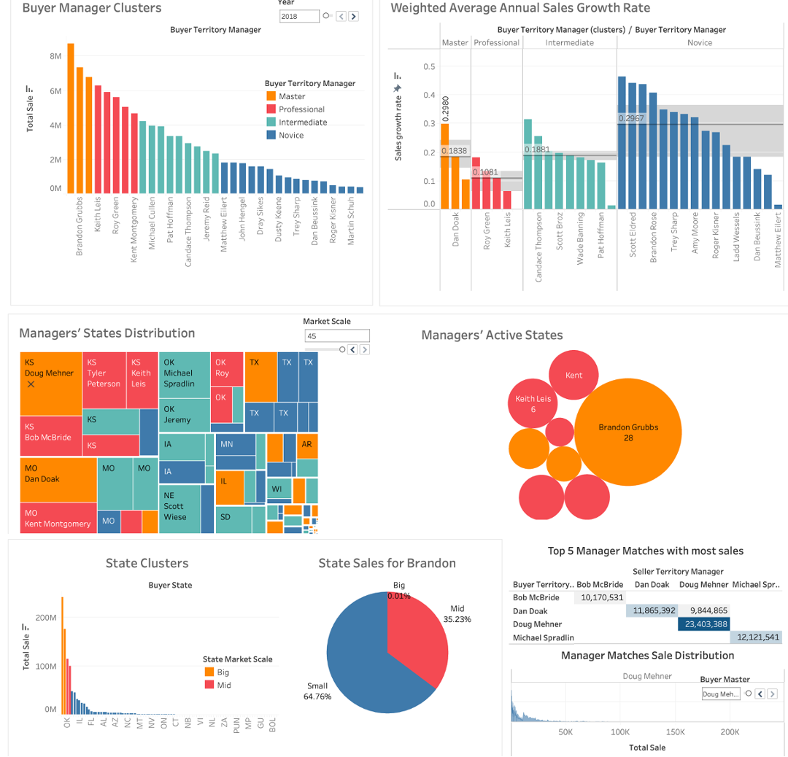

Data Visualization of Online Specialty Auction Data
Introduction
This document summarizes the key insights that our team has derived from the Online Auction Website Data. We have analyzed the data in terms of four major aspects (Customer Preferences, Sales Trends, and Human Resources Management). With this information, we provided a series of actionable insights and recommendations for the CFO and COO to expand market presence and increase revenue.
Executive Dashboard

The Executive Metric Dashboard offers a comprehensive overview of an online auction platform's performance metrics. The dashboard is segmented into various sections to depict a multi-dimensional analysis of the company's activities.
At the top, key performance indicators (KPIs) are presented: 28,827 buyers, 6,604 sellers, a profit of $41.618K, 457,803K sales, a profit ratio of 9.09%, 278 auctions, and 75,548 items sold. The triangles represent the year-on-year growth rate for last month (September 2023). All the growth rates are positive except for profit ratio, which remains the same (the profit is always 10% of the total sales).
The "Auction Category Metrics" section uses line graphs to display trends over the last three years in different auction categories, including construction (CONST), vehicles (VE), agriculture (AG), government (GOVT), and trucks (TRUCK), with an "Others" category capturing residual data. This visual representation allows for quick identification of trends and performance in each category. By choosing different metrics (including profit, sales, items, buyers, sellers) and different relative data (customized), we can see the trend lines for different metrics and period. The details are shown in the table on the right.
A heatmap titled "Hot Spot by State" visualizes profit distribution across the United States, guiding strategic decisions on geographic focus. By clicking on different states, it will filter all other sheets so that it is easy for us to see the details of different states. The pie chart breaks down the percentage of sales by category, indicating that Construction Equipment and Trucks, Medium and Heavy Duty, are the most significant contributors to sales.
The "Top Buyer Managers" and "Top Seller Managers" bar charts rank the individuals contributing most to purchases and sales, respectively, which can be instrumental for performance evaluation and incentive planning.
By exploring this dashboard, we can identify some questions or growth opportunity regarding our business:

Customer Analysis

We have
identified the top four states in terms of active buyer participation
in auctions, which are KS (Kansas), MO (Missouri), OK (Oklahoma), and
TX (Texas). These states are significant contributors to the total
auction fees as well, suggesting a high level of engagement in auction
activities. The most profitable items in these auctions are from
manufacturers like John Deere, Ford, and Caterpillar. This trend
aligns with the economic profiles of these states, which have
substantial agricultural and industrial sectors that necessitate
robust machinery such as tractors, trucks, and pickup vans.
On the other hand, we have recognized that UT (Utah) is experiencing a declining sales trend. The root cause appears to be its top demand category, BLISS, which currently ranks 33rd among the various auction categories our company offers. In order to improve sales in UT (Utah), the CEO should consider increasing the frequency of auctions in the BLISS category to better align with its high demand in UT. On a higher level, our team would suggest the CEO to redistribute its resources from those top selling states to other less active states.

Next, our team has investigated the key characteristics of our frequent buyers (Top 1000). We have discovered that they exhibit a greater average item distance. Given the size and transportation costs associated with products, we typically prioritize advertising based on item distance. However, with these frequent buyers, we can deviate from this approach and focus on promoting items that are comparatively distant from their usual preferences.
Sales Trends

When examined closely, there is a clear pattern of sales increasing from January to December every year with December’s total sales being the highest and January being the lowest. This phenomenon could be attributed to construction industry specific reasons, because this auction website focuses on selling large construction equipment such as trucks, trailers, and forestry tools. The COO can use this information to decide whether or not to advertise more aggressively during the first half of each year and redistribute a portion of December’s marketing cost to other months to achieve a smoother distribution throughout the year.
Human Resources Management

Lastly, we devised different plans for promoting certain seller and buyer managers to increase total sales. In terms of seller manager, we concluded that we can evaluate these managers’ performance by examining their YTD growth sales rate, current sales amount, and predicted future sales amount.

In terms of buyer managers, we evaluated their performance by looking at their weighted average growth rate, the number of states covered, and the number of existing partnerships they have. The managers are categorized into four levels based on their tenure and sales volumes: Master, Professional, Intermediate, and Novice.
We have identified Brandon Grubs as a manager with the highest growth rate in sales volume. Our curiosity leads us to investigate the reasons behind his exceptional performance. An examination into the Manager state's distribution shows that, compared to his peers, Brandon's operations span an impressive 28 states, significantly surpassing the reach of other managers. Moreover, most of his profit earnings (64.76%) are derived from states with smaller overall business volumes.
Additionally, it has been observed that Brandon has extensive collaborations with other managers. This expansive operational reach and spirit of collaboration are key strategies contributing to Brandon's success and serve as valuable practices from which other managers could learn.